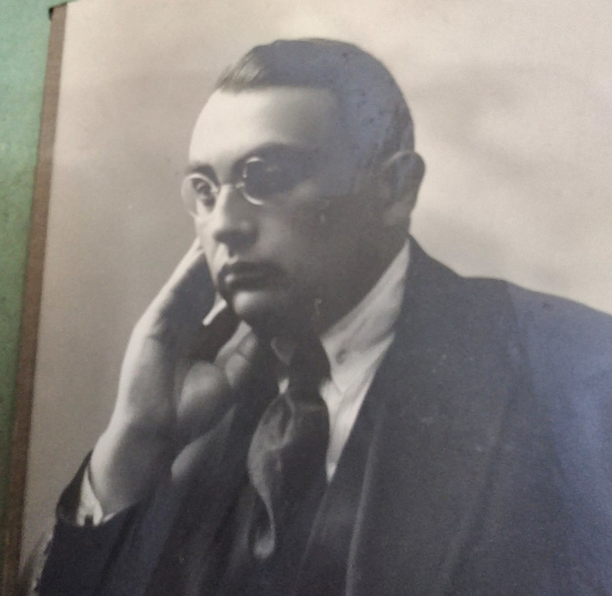
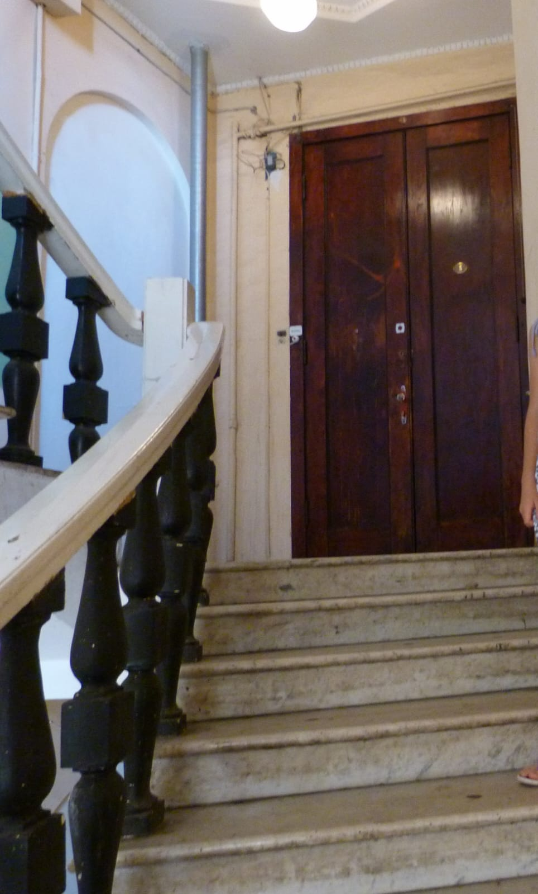
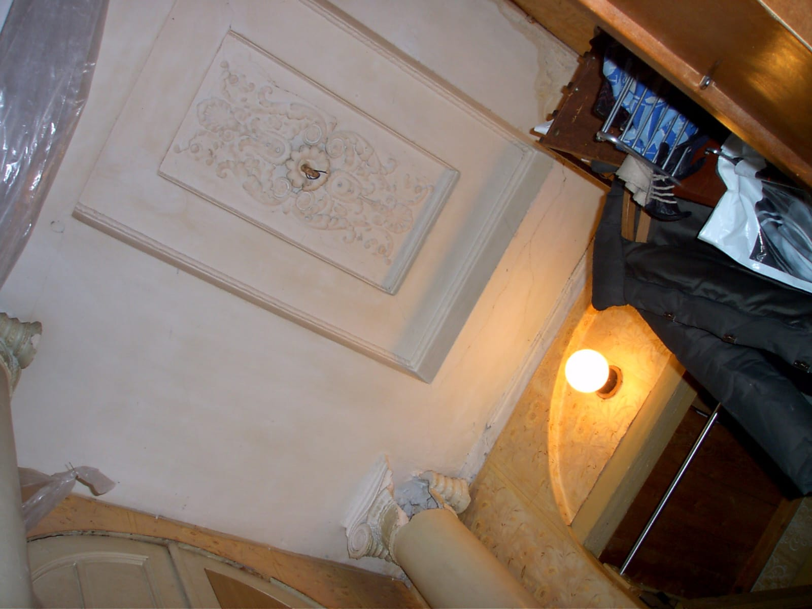
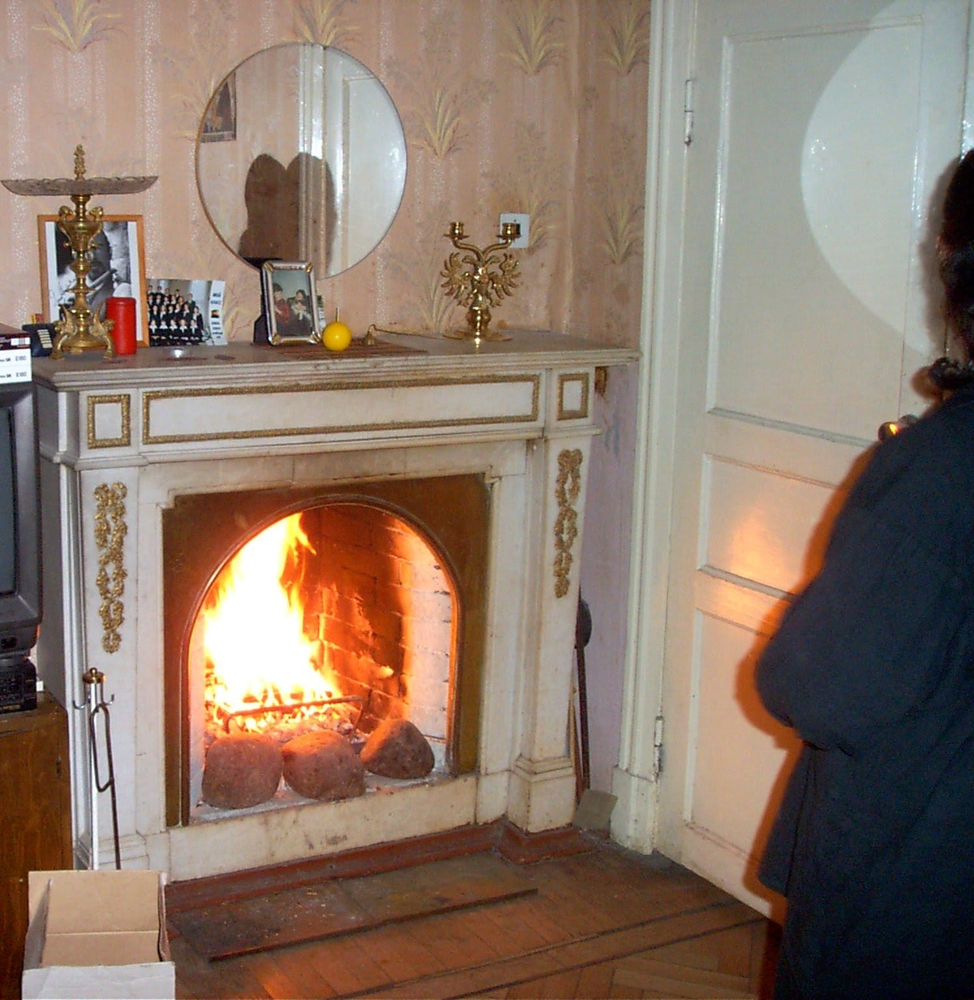

The flat on the 5th floor was divided into two in the 1920s — on the initiative of the pre-revolutionary tenant General Nikolaev, and three rooms on the side of the front staircase were bought by a certain Fraiman from Mogilev.
 The fourth room was bought in 1927 by his fellow countryman Veniamin Rafalovich, who moved in with his wife and two children — daughter Miriam and son Adolf.
 In 1929, Fraiman sold the large hall to his cousin and business partner (co-owner of a brewery), Dovid-Irma Pevzner. So, a large Jewish family from Mogilev settled in the hall in the late twenties — the deeply religious Dovid-Irme with his wife Haya-Rohl and some children, who had already departed from religious traditions.